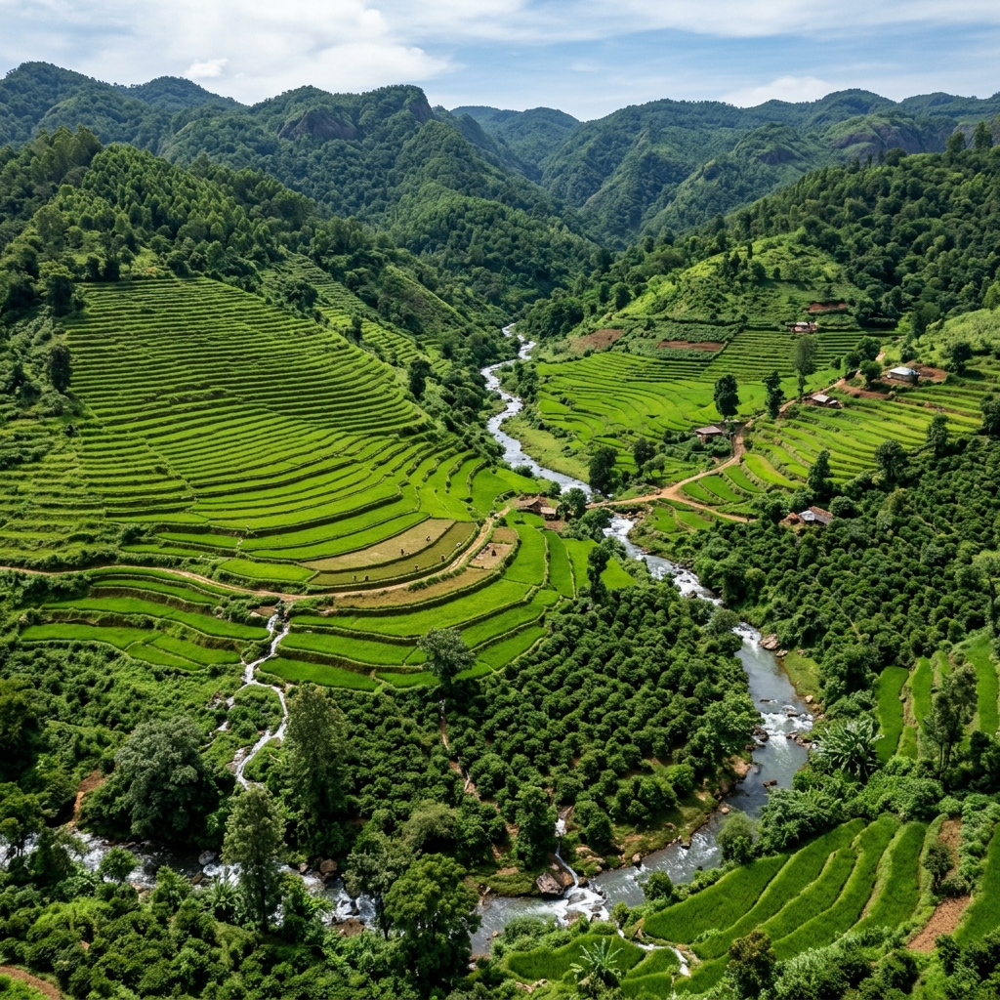

🧹 Sanitation
Sanitation services for rural public.

Strengthening rural civic amenities and village-level development
The main object of the Panchayat Raj Department is to provide civic amenities to the rural public.
The main object of the Panchayat Raj Department is to provide civic amenities to the rural public.

Essential services and development activities for rural communities
Sanitation services for rural public.
Drinking water supply for rural communities.
Street lighting facilities in villages.
Developmental activities in and around the village according to funds availability.
Besides these civic amenities, the Department undertakes different activities entrusted by the District Administration and the Government.
Distribution of NTR Bharosa pensions.
Construction of ISLs.
Other activities may be undertaken as entrusted by the District Administration and the Government.
Gram Panchayats have different sources of income to support local administration and development activities.
The Government has been releasing Grants under the 14th Finance Commission regularly to the Gram Panchayats to take up developmental activities as per guidelines issued thereunder.

The Panchayat Secretary set up was introduced by the Government in the year 2002 and their job chart was designed vide G.O.Ms.No.295, PR&RD Dt. 2007.
Extension Officer (PR&RD)
The immediate superior officer for the Panchayat Secretary is Extension Officer (PR&RD) and he has to ensure that the administration in the Gram Panchayat is in order and in accordance with Law and provisions.
The next level hierarchy is Divisional Panchayat Officer and then District Panchayat Officer.
They will inspect the Gram Panchayats periodically and see that the administration of such Gram Panchayats is in order.
There is every need to augment the resources of the Gram Panchayats to meet the daily needs of sanitation, drinking water supply and street lighting which are mandatory to provide to the general public residing in rural areas.
Gram Panchayats need adequate resources to meet these essential rural civic needs.
For this, the Gram Panchayats have to levy:
Drainage Cess
Lighting Cess
Advertisement Tax on hoardings erected within the limits of the Gram Panchayats.